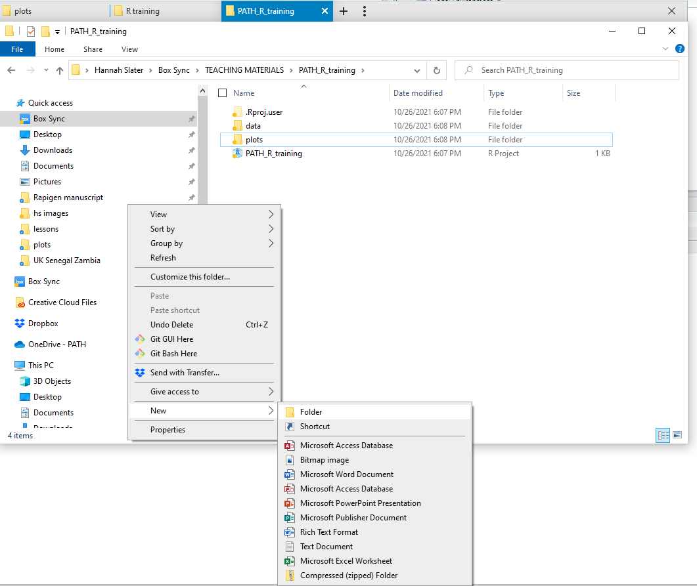

20 * 10.5[1] 21017 + 23 - 7[1] 33R is a statistical and graphical software package, and is the very commonly used in many disciplines, including data science, statistics and the environmental and biological sciences The great strengths of R for the research community are:
By the end of this unit we will have covered
Hopefully you have followed the tutorial we shared and have RStudio downloaded and installed on your computer If you open up Rstudio, you will have 3 panels that look like this
The first thing you want to do is open up a new R script
Your Rstudio will now have 4 panels
These screens are:
Top left: An “R Script” window – this is essentially a text editor where you can write code and commands to be run in the console window. You can edit and correct your work here, and save it so you can use it again. I suggest saving regularly, and keep all your successful code here so you can keep working. Try to use informative script names to help your future self, for example you could save this unit’s script as “R_training_part1”.
Bottom left: This is the “R Console” – this is where the processing is done. You should typically write script code in the “RScript” window and press Ctrl+Enter (or click “Run”) to run them in the console. You may sometimes want to type directly in the console to quickly check that new object looks how you expect them to look or run simple checks that you don’t want to revisit later.
Top right: The “Environment” tab here shows all the data you’ve loaded and variables/objects you’ve created.
Bottom right: Plots you create will show here. You can also use R Help here: type a function you’re using into the search box and you will get information on its inputs (“Arguments”) and outputs (“Value”), or in the console write a ‘?’ then the function name, i.e. ‘?mean’ to understand how to use the ‘mean’ function.
Projects are a really neat way to work in Rstudio – it means that all the inputs (i.e. data, scripts) and outputs (i.e. plots, summary tables) are stored in the same place. It also means other people can use the same project and rerun our analyses without having to define new filepaths (which can be a pain!) When starting a new project, it is a really good practice to set up a project and associated file structure.
Firstly go to file -> new project, then select new directory, then new project
Define your directory (folder) name (I’d suggest something like R_training_workshop_[date])
Then use the browse option to save this folder somewhere sensible for you (I tend to save things like this in a training folder on my box drive)
Now you have a new project!
The next step is to open up a file explorer window and locate this folder
Manually create three new subfolders called data, scripts and plots – everything we use and create during this workshop will be stored here for easy reference and will be able to be reproduced by other or yourself on a different computer

We can now start using R – the simplest thing to do is just to use R as a basic calculator. You can write equations in the script and run them in the console to do simple calculations
20 * 10.5[1] 21017 + 23 - 7[1] 33There are also a wide range of mathematical functions such as log(), sqrt(), exp()
sqrt(25)[1] 5If you don’t know what an inbuilt function does, type a ‘?’ before its name, and the help page will appear on the right hand side of your screen:
?sqrtA note on errors – these happen ALL THE TIME! A large part of learning to code is learning how to spot and fix your errors – this is called debugging (a great hobby for malaria researchers!)
For example, try the following - why do they not work?
sqrt(a)
sqrt("a")
SQRT(25)
sqrt(25))If your code isn’t working, the first few things to check are:
A note on commenting code - it is really good practice to comment your code - this means writing brief descriptions of what you’ve done.
By adding the ‘#’ before a line of code, it will not be run as code in your console
# write in a description here so you can remember what you did in the future!
# here I am using the formula for the area of a circle pi * r^2
area_of_cirlce <- pi * 4 ^2You can also comment out (i.e. add a # before them) lines of code that are maybe wrong or not needed in an analysis before you decide if you need to actually delete them or not.
R can store and organize data, parameter, variables of lots of different types – we will now explore a few of them:
Single numbers can be given names like this
my_first_variable <- 20
my_first_variable[1] 20Important to think about how to name variables – do you want to be quick, or do you want your code to make sense to you and others in the future! We can use both uninformative and informative variable names
b <- 2/10
malaria_prevalence_2020 <- 2/10The “<-” operator tells R to take the number to the right of the symbol and store it in the variable named on the left (You could also use”=“)
Note: R is case sensitive so for example, the variable ‘malaria_prevalence_2020’ is different than ‘Malaria_prevalence_2020’. Variable names cannot begin with numbers, and you cannot have ‘spaces’ in your variable names (we normally use an underscore ‘_’ where we might want a space).
You’ll probably create lots of variable names, and you might forget some of them. You can list all the ones in your session using
ls()[1] "b" "has_annotations"
[3] "malaria_prevalence_2020" "my_first_variable" You can overwrite a variable at any point, for example,
test_variable <- 15
test_variable[1] 15test_variable <- 20
test_variable[1] 20In R programming, the terms ‘variable’ and ‘object’ are often used interchangeably.
Note: some variable names are not allowed - variables cannot begin with a number or punctuation. It is not a good idea to name variables after in-built R functions - i.e not a good idea to name a variable ‘sum’ or ‘mean’ - we will see very shortly that these words already have a purpose in R!
Strings are like numbers (in that they represent only one object), but text instead:
my_first_string <- "avocado"
my_first_string[1] "avocado"Now, try this:
my_first_string * my_first_stringWhat happens? Why? If you’re not sure what type of data your object is, you can use this function:
class(my_first_string)[1] "character"class(my_first_variable)[1] "numeric"Here, “character” is the name of the datatype of strings, and “double” is a type of number. You can also use the functions “typeof” and “str” to find out about an object (try them out!).
Vectors and lists are the same kind of object, and represent a set of variables (numbers, strings) in an order. To do this, we use the function ‘c’ which is short for ‘combine’. It combines various objects into a vector. Create these vectors in R:
v1 <- c(1,2,3,4,5)
v2 <- c(0.1,0.15,0.2,0.4,0.5)
v3 <- c("red","blue","green","orange","black")You can access an individual element by knowing its position in the list. So the 3rd element in the list v1 is found by using square brackets:
v1[3][1] 3Different types of brackets have different roles in R, so it’s important you use the correct type.
\(\color{red}{\text{Question 1: What happens if you try to find an element that doesn’t exist?}}\)
\(\color{red}{\text{e.g. the 0th or 6th element of v1 - how do you type this and what is the output? }}\)
You can calculate summary statistics of, and plot, a vector. What do each of these do?:
mean(v1)
sd(v1)
var(v1)
min(v1)
max(v1)
sum(v1)
sum(v1[c(1,4)])
length(v1)
plot(v1)
plot(v2,v1)\(\color{red}{\text{Question 2: What happens if you try to do use these operations on v3 rather than v1?}}\)
\(\color{red}{\text{Question 3: Try v1* v2 - What has the operator * done to your vectors? Is that what you expected?}}\)
You can create a zero-vector of a given length (e.g. 14) like this:
v4 <- rep(0, 14)This literally means - we want to repeat the value ‘0’ 14 times – you can learn more about the ‘rep’ function by typing ?rep
You can then add values into your vector, for example:
v4[1] <- 10
v4 [1] 10 0 0 0 0 0 0 0 0 0 0 0 0 0\(\color{red}{\text{Question 4:What do you think the following will do? }}\)
\(\color{red}{\text{v4[2:14] <- c(11:23) Try to guess before you try it!}}\)
Note: the colon operator ‘:’ allows us to create vectors of consecutuve numbers. For example 1:5 creates a vector from 1 to 5. Quickly try creating a vector from 101 to 200.
Data frames are tables that are used for storing data, similar to what you might be used to seeing in excel. R has lots of built-in data sets that you can practice on, including one called CO2. Type
?CO2to read the documentation. You can load this dataset into R using:
data("CO2")To see the data, you could type CO2 but it’s quite long. Instead you can look at the first few lines by typing
head(CO2) Plant Type Treatment conc uptake
1 Qn1 Quebec nonchilled 95 16.0
2 Qn1 Quebec nonchilled 175 30.4
3 Qn1 Quebec nonchilled 250 34.8
4 Qn1 Quebec nonchilled 350 37.2
5 Qn1 Quebec nonchilled 500 35.3
6 Qn1 Quebec nonchilled 675 39.2Or if you want to look at more lines (i.e. the first 20)
head(CO2, n = 20) Plant Type Treatment conc uptake
1 Qn1 Quebec nonchilled 95 16.0
2 Qn1 Quebec nonchilled 175 30.4
3 Qn1 Quebec nonchilled 250 34.8
4 Qn1 Quebec nonchilled 350 37.2
5 Qn1 Quebec nonchilled 500 35.3
6 Qn1 Quebec nonchilled 675 39.2
7 Qn1 Quebec nonchilled 1000 39.7
8 Qn2 Quebec nonchilled 95 13.6
9 Qn2 Quebec nonchilled 175 27.3
10 Qn2 Quebec nonchilled 250 37.1
11 Qn2 Quebec nonchilled 350 41.8
12 Qn2 Quebec nonchilled 500 40.6
13 Qn2 Quebec nonchilled 675 41.4
14 Qn2 Quebec nonchilled 1000 44.3
15 Qn3 Quebec nonchilled 95 16.2
16 Qn3 Quebec nonchilled 175 32.4
17 Qn3 Quebec nonchilled 250 40.3
18 Qn3 Quebec nonchilled 350 42.1
19 Qn3 Quebec nonchilled 500 42.9
20 Qn3 Quebec nonchilled 675 43.9We can see how big this dataset is using the following command
dim(CO2)[1] 84 5Where the first number is the number of rows and the second number is the number of columns.
\(\color{red}{\text{Q5: What are the column names of this dataset?}}\)
You can access individual element of a dataframe by knowing its row and column position. For example, “Quebec” is in third row and second column, so we can find it by typing:
CO2[3,2][1] Quebec
Levels: Quebec MississippiSo the first number refers to the row and the second number the column - we can remember this as CO2[row, column]
You can also extract an individual column or row. To extract the sixth row:
CO2[6,] Plant Type Treatment conc uptake
6 Qn1 Quebec nonchilled 675 39.2or third column:
CO2[,3] [1] nonchilled nonchilled nonchilled nonchilled nonchilled nonchilled
[7] nonchilled nonchilled nonchilled nonchilled nonchilled nonchilled
[13] nonchilled nonchilled nonchilled nonchilled nonchilled nonchilled
[19] nonchilled nonchilled nonchilled chilled chilled chilled
[25] chilled chilled chilled chilled chilled chilled
[31] chilled chilled chilled chilled chilled chilled
[37] chilled chilled chilled chilled chilled chilled
[43] nonchilled nonchilled nonchilled nonchilled nonchilled nonchilled
[49] nonchilled nonchilled nonchilled nonchilled nonchilled nonchilled
[55] nonchilled nonchilled nonchilled nonchilled nonchilled nonchilled
[61] nonchilled nonchilled nonchilled chilled chilled chilled
[67] chilled chilled chilled chilled chilled chilled
[73] chilled chilled chilled chilled chilled chilled
[79] chilled chilled chilled chilled chilled chilled
Levels: nonchilled chilledYou can even subset the data, for example if you wanted to create a new dataframe, CO2_op2, which contains all rows but only the second and third columns:
CO2_op2 <- CO2[,2:3]
head(CO2_op2) Type Treatment
1 Quebec nonchilled
2 Quebec nonchilled
3 Quebec nonchilled
4 Quebec nonchilled
5 Quebec nonchilled
6 Quebec nonchilledYou can also check what types of data are in each column using the command
str(CO2)Classes 'nfnGroupedData', 'nfGroupedData', 'groupedData' and 'data.frame': 84 obs. of 5 variables:
$ Plant : Ord.factor w/ 12 levels "Qn1"<"Qn2"<"Qn3"<..: 1 1 1 1 1 1 1 2 2 2 ...
$ Type : Factor w/ 2 levels "Quebec","Mississippi": 1 1 1 1 1 1 1 1 1 1 ...
$ Treatment: Factor w/ 2 levels "nonchilled","chilled": 1 1 1 1 1 1 1 1 1 1 ...
$ conc : num 95 175 250 350 500 675 1000 95 175 250 ...
$ uptake : num 16 30.4 34.8 37.2 35.3 39.2 39.7 13.6 27.3 37.1 ...
- attr(*, "formula")=Class 'formula' language uptake ~ conc | Plant
.. ..- attr(*, ".Environment")=<environment: R_EmptyEnv>
- attr(*, "outer")=Class 'formula' language ~Treatment * Type
.. ..- attr(*, ".Environment")=<environment: R_EmptyEnv>
- attr(*, "labels")=List of 2
..$ x: chr "Ambient carbon dioxide concentration"
..$ y: chr "CO2 uptake rate"
- attr(*, "units")=List of 2
..$ x: chr "(uL/L)"
..$ y: chr "(umol/m^2 s)"Three of the columns are called factors – these are often strings and correspond to a column on which you may want to analyse. They typically represent a variable that has a limited number of values – for example, sex, age group, or province would be considered factors in a malaria dataset.
We can see a quick summary of the numeric variables using
summary(CO2) Plant Type Treatment conc uptake
Qn1 : 7 Quebec :42 nonchilled:42 Min. : 95 Min. : 7.70
Qn2 : 7 Mississippi:42 chilled :42 1st Qu.: 175 1st Qu.:17.90
Qn3 : 7 Median : 350 Median :28.30
Qc1 : 7 Mean : 435 Mean :27.21
Qc3 : 7 3rd Qu.: 675 3rd Qu.:37.12
Qc2 : 7 Max. :1000 Max. :45.50
(Other):42 If we want to explore on column of a dataframe, we use the ‘$’ operator – for example,
CO2$Treatment [1] nonchilled nonchilled nonchilled nonchilled nonchilled nonchilled
[7] nonchilled nonchilled nonchilled nonchilled nonchilled nonchilled
[13] nonchilled nonchilled nonchilled nonchilled nonchilled nonchilled
[19] nonchilled nonchilled nonchilled chilled chilled chilled
[25] chilled chilled chilled chilled chilled chilled
[31] chilled chilled chilled chilled chilled chilled
[37] chilled chilled chilled chilled chilled chilled
[43] nonchilled nonchilled nonchilled nonchilled nonchilled nonchilled
[49] nonchilled nonchilled nonchilled nonchilled nonchilled nonchilled
[55] nonchilled nonchilled nonchilled nonchilled nonchilled nonchilled
[61] nonchilled nonchilled nonchilled chilled chilled chilled
[67] chilled chilled chilled chilled chilled chilled
[73] chilled chilled chilled chilled chilled chilled
[79] chilled chilled chilled chilled chilled chilled
Levels: nonchilled chilledReturns just the ‘treatment’ column
Another useful function to quickly explore data is ‘table’ – what does this command return?
table(CO2$Treatment)
nonchilled chilled
42 42 \(\color{red}{\text{Q6a: What is the value in the 14th row and 5th column?}}\)
\(\color{red}{\text{Q6b: What are the values in the 1st to 7th rows of the 4th column}}\)
\(\color{red}{\text{Q6c: How many of the samples are from Quebec?}}\)
We can also use functions to summarise the numeric data
mean(CO2$uptake)[1] 27.2131\(\color{red}{\text{Q7: What is the range and median of the uptake column? }}\)
What if we only want to know the mean of the ‘uptake’ from Quebec?
This is where we’ll touch upon the fact that there are multiple ways to do almost EVERYTHING in R!
The traditional ‘base R’ approach uses the ‘which’ function to figure out which bits of the data we want to calculate our sum over –
which(CO2$Type == "Quebec") This returns a vector with the positions in the column CO2$Type where the type is Quebec
This is then used inside square brackets to select only these elements of CO2$conc
CO2$conc[which(CO2$Type == "Quebec")]mean(CO2$uptake[which(CO2$Type == "Quebec")])[1] 33.54286The tidyverse approach, which we are covering in depth tomorrow uses a function called filter
op1 = filter(CO2, Type == "Quebec")
mean(op1$uptake)[1] 33.54286We can also filter by 2 or more criteria
op2 = filter(CO2, Type == "Quebec", Treatment == "chilled")
mean(op2$uptake)[1] 31.75238\(\color{red}{\text{Can you now fill in this table - we want the **MEDIAN** uptake value for each treatment-type combination}}\)
R packages are collections of functions and data sets developed by the community.
They increase the power of R by improving existing base R functionalities, or by adding new ones. There seems to be an R package that does almost everything – from the most widely used ones
To the plain ridiculous:
names(wes_palettes) [1] "BottleRocket1" "BottleRocket2" "Rushmore1" "Rushmore"
[5] "Royal1" "Royal2" "Zissou1" "Darjeeling1"
[9] "Darjeeling2" "Chevalier1" "FantasticFox1" "Moonrise1"
[13] "Moonrise2" "Moonrise3" "Cavalcanti1" "GrandBudapest1"
[17] "GrandBudapest2" "IsleofDogs1" "IsleofDogs2" cols = wes_palette("GrandBudapest1")
colssay("My favourite R package is called purrr", by = "cat")
--------------
My favourite R package is called purrr
--------------
\
\
\
|\___/|
==) ^Y^ (==
\ ^ /
)=*=(
/ \
| |
/| | | |\
\| | |_|/\
jgs //_// ___/
\_)
There are two stages to using a package
We’re going to try and install and use a package called janitor (https://cran.r-project.org/web/packages/janitor/vignettes/janitor.html)
install.packages(“janitor”)
library(janitor)When installing a new package, I typically either write it straight in the console or comment it out in my script to avoid reinstalling every time I run my code
# install.packages(“janitor”)If you want to see all the functions available in a package, there are typically pdf’s online of each function and often user guides.
You can also remind yourself of functions in a package by typing, for example,
janitor::In your console or script
\(\color{red}{\text{Q8: Can you install and load either **wesanderson** or **cowsay** packages}}\)
\(\color{red}{\text{and generate either a Wes Anderson colour palette or a speaking animal?}}\)
Normally when we analyse data in R we are reading in external data sources - here we learn how to load those into R.
If this training has been shared with you, you should have access to a file called district-cases-wide.csv - now manually save this into the data folder in your project directory.
We can now read this into R
dat <- read_csv("data/district-cases-wide.csv")This is an aggregated dataset from DHIS2 in Zambia - we have a row for each district-month.
We have 5 key bits of data (as well as date, province, district):
head(dat)# A tibble: 6 × 8
period province district Clinical Confirmed Tested Confirmed_Passive_CHW
<date> <chr> <chr> <dbl> <dbl> <dbl> <dbl>
1 2018-01-01 Central Chibombo 26 1897 8215 NaN
2 2018-01-01 Central Chisamba NaN 2192 7772 NaN
3 2018-01-01 Central Chitambo 33 6011 3993 NaN
4 2018-01-01 Central Itezhi-te… NaN 890 5007 897
5 2018-01-01 Central Kabwe 32 3600 13271 NaN
6 2018-01-01 Central Kapiri-Mp… 507 21527 18061 NaN
# ℹ 1 more variable: Tested_Passive_CHW <dbl>Note that (depending on your screen size) a few variables are not visible in the console. You can remedy this with the following code:
options(dplyr.width = Inf)We can now apply some of the tools we’ve learnt today to analyse some aggregated DHIS2 data from Zambia.
dat <- dat %>% mutate(year = lubridate::year(period))
op1 = filter(dat, district == "Katete", year == 2020)
op1# A tibble: 12 × 9
period province district Clinical Confirmed Tested Confirmed_Passive_CHW
<date> <chr> <chr> <dbl> <dbl> <dbl> <dbl>
1 2020-01-01 Eastern Katete NaN 2799 9777 3586
2 2020-02-01 Eastern Katete NaN 2331 10066 3573
3 2020-03-01 Eastern Katete NaN 5059 15256 11604
4 2020-04-01 Eastern Katete NaN 6855 14222 21573
5 2020-05-01 Eastern Katete NaN 7435 13215 15851
6 2020-06-01 Eastern Katete NaN 4910 10973 7121
7 2020-07-01 Eastern Katete NaN 2182 6686 3246
8 2020-08-01 Eastern Katete NaN 1074 5469 1885
9 2020-09-01 Eastern Katete NaN 751 4844 1296
10 2020-10-01 Eastern Katete NaN 636 4971 1179
11 2020-11-01 Eastern Katete NaN 416 5339 961
12 2020-12-01 Eastern Katete NaN 422 3749 753
# ℹ 2 more variables: Tested_Passive_CHW <dbl>, year <dbl>sum(op1$confirmed)Warning: Unknown or uninitialised column: `confirmed`.[1] 0op2 = filter(dat, district == "Sinazongwe", year == 2019)
op2# A tibble: 12 × 9
period province district Clinical Confirmed Tested Confirmed_Passive_CHW
<date> <chr> <chr> <dbl> <dbl> <dbl> <dbl>
1 2019-01-01 Southern Sinazong… NaN 1663 6140 1381
2 2019-02-01 Southern Sinazong… 96 2167 7324 1405
3 2019-03-01 Southern Sinazong… 20 3618 8542 3735
4 2019-04-01 Southern Sinazong… 2 1134 4192 894
5 2019-05-01 Southern Sinazong… 6 2725 6332 2585
6 2019-06-01 Southern Sinazong… 187 1682 5116 1049
7 2019-07-01 Southern Sinazong… NaN 1733 6137 1027
8 2019-08-01 Southern Sinazong… 1 1269 5528 865
9 2019-09-01 Southern Sinazong… NaN 1022 4275 713
10 2019-10-01 Southern Sinazong… NaN 624 3180 381
11 2019-11-01 Southern Sinazong… NaN 212 1865 100
12 2019-12-01 Southern Sinazong… NaN 474 2244 193
# ℹ 2 more variables: Tested_Passive_CHW <dbl>, year <dbl>sum(op2$tested) + sum(op2$tested_passive_chw)Warning: Unknown or uninitialised column: `tested`.Warning: Unknown or uninitialised column: `tested_passive_chw`.[1] 0\(\color{red}{\text{Question 9: What happens if we repeat this for Chama district?, Why?}}\)
It’s really important to look at your data closely! We can fix this problem by using the following logic:
test_vector <- c(1,5,8,3,NA,6)
sum(test_vector)[1] NAsum(test_vector, na.rm=TRUE)[1] 23How did we know to do this? We looked at the help file for sum by using ?sum and saw the option to add an argument that removes NAs.
\(\color{red}{\text{Question 9 cont.: Now we know how to remove NAs, how many RDTs were conducted in Chama in 2019?}}\)
We will spend the next chapter learning about more ways to manipulate and aggregate data - but for now, you can try and answer these questions using the examples above!
\(\color{teal}{\text{Final exercise 1: What is the total number of cases (all HF and CHW) in Western province in 2020? }}\)
\(\color{teal}{\text{Final exercise 2: How many RDTs have been conducted by CHWs in 2021 compared to 2020?}}\)
\(\color{teal}{\text{Final exercise 3: In 2020, were there more malaria cases in Luapula or Muchinga?}}\)
(And three functions from the tidyverse world)